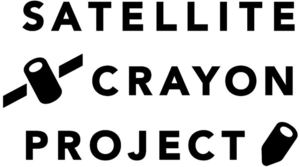

Trade Mark Journal No.2025/015 11 April 2025
WO0000001846545 (16,18,21,25,28)
Office of origin: Japan
Date of International Registration:7 November 2024
Date of designation in the UK:
7 November 2024

International priority date claimed: 20 May 2024
(Japan)
- Class 16
- Pastes and other adhesives for stationery or household purposes; sealing wax; industrial packaging containers of paper; bags of plastics for packaging; pouches of plastics for packaging; food wrapping plastic film for household use; banners of paper; flags of paper; towels of paper; table napkins of paper; handkerchiefs of paper; hand towels of paper; hygienic hand towels of paper; assorted pieces of colored paper; printed coloring books; transfers [decalcomanias]; cutout pictures of paper; chiyogami [assorted pieces of Japanese paper with colorful patterns printed thereon]; origami folding paper; paper and cardboard; printed postcards; stationery; writing implements; ink for writing instruments; seals, stationery; hand-held paper knives; pens; erasers; bookmarkers; blank writing journals; sketchbooks; desktop document stands; washi tapes [decorative adhesive tapes for stationery or household purposes]; crayons; stands for pens; picture postcards, calendars, books, notebooks, magazines, journals and brochures featuring satellite view of landscape on earth; printed notebooks; printed baby books; paintings and calligraphic works; printed photographs of satellite view of landscape on earth.
- Class 18
- Industrial packaging containers of leather; clothing for pets; shoulder bags; briefcases; suitcases; carry-on bags; trunks being luggage; handbags; boston bags; waist bags; clutch bags; sport bags; duffel bags; school bags; drawstring bags; textile shopping bags; pouches of textile; pouches of leather; pouches made from imitation leather; card wallets; change purses; key cases; wallets; purses; business card cases; tote bags; back packs; vanity cases, not fitted; schoolchildren's backpacks; umbrellas.
- Class 21
- Cosmetic brushes; eyelash separators; powder compacts, empty; hairbrushes; cosmetic spatulas; droppers for cosmetic purposes; toothbrushes; combs; comb cases; powder puffs; powder compacts sold empty; industrial packaging containers of glass or porcelain; coffee mugs; insulated mugs; travel mugs; water bottles sold empty; non-electric cookware, namely, pots, pans, dishes, frying pans, kettles, coffeepots, pastry molds; trays for household purposes; pot holders; trivets; chopping boards for kitchen use; chopsticks; chopstick cases; drinking straws; tea services in the nature of tableware; coffee services in the nature of tableware; dishware of glass; dishware of porcelain; dishware of ceramic; dishware of earthenware; dishware; vacuum bottles; mugs; washing boards; clothes pegs; washing brushes; wash basins in the nature of bowls; dusting or cleaning cloths; washtubs; dusters; brooms; adhesive rollers for cleaning; candle extinguishers; candlesticks; candle drip rings; clothes drying hangers; towel drying hangers; prize cups of porcelain, ceramic, earthenware, terra-cotta or glass; commemorative shields of porcelain, ceramic, earthenware, terra-cotta or glass.
- Class 25
- Clothing jackets; coats; jeans; down jackets; one-piece suits; blouses; skirts; dresses; vests; scarfs; boleros; uniforms; jumpers in the nature of sweaters; jumpers in the nature of dresses; jumpers in the nature of coveralls; pants; shirts; t-shirts; collared shirts; polo shirts; raincoats; suits; sweaters; pullovers; cardigans; nightgowns; pajamas; nightwear; swimsuits; bathing caps; underclothing; tights; camisoles; aprons; bandanas; stoles; shawls; mufflers as neck scarves; ear muffs; leg warmers; caps being headwear; headwear; socks and stockings; parkas; garters; braces for clothing; waistbands; belts for clothing; sock suspenders; footwear not for sports; footwear, namely, flip-flops; slippers; leisure shoes; sneakers; masquerade costumes; athletic footwear for runners, soccer, baseball, basketball, tennis; clothing for sports.
- Class 28
- Toys for domestic pets; toy construction blocks; toy building blocks; stuffed toys; board games; toy jewelry; toy stamps; toy Christmas trees; toy LED light sticks; drawing toys; play houses and toy accessories therefor; inflatable toys; squeeze toys; educational toys for teaching and testing knowledge relating to satellite view of landscape on earth; card games; toy action figures; toy cameras; toy robots; toy vehicles; toy watches; toy models; toy masks; electric action toys; dolls; sketching toys; infant development toys; children's multiple activity toys; go games; Japanese chess (shogi games); Japanese playing cards (utagaruta); dice; Japanese dice games (sugoroku); cups for dice; Chinese checkers as games; chess games; checkers sets; apparatus for performing magic tricks; dominoes; playing cards; Japanese playing cards (hanafuda); mah-jong; darts; billiard equipment; playground slides; swings; jungle gyms; pachinkos; sport balls; athletic sporting goods, namely, athletic wrist and joint supports; bags specially adapted for sports equipment; cases specially adapted for sports equipment.
SKY Perfect JSAT Corporation
Representative: INABA Yoshiyuki, TMI Associates,, 23rd Floor, Roppongi Hills Mori Tower,, 6-10-1, Roppongi, Minato-ku, Tokyo 106-6123, JAPAN